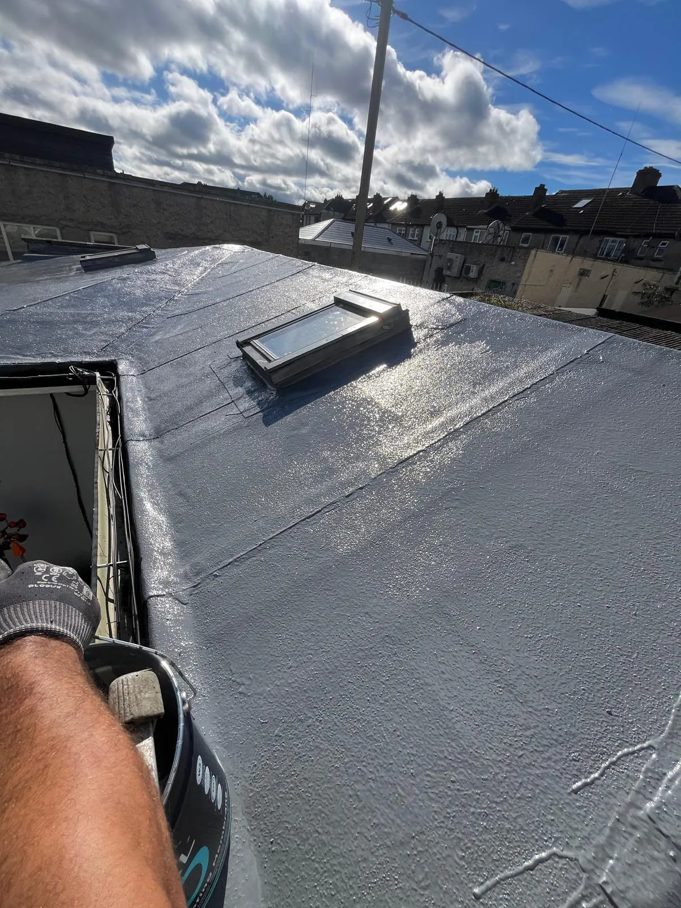
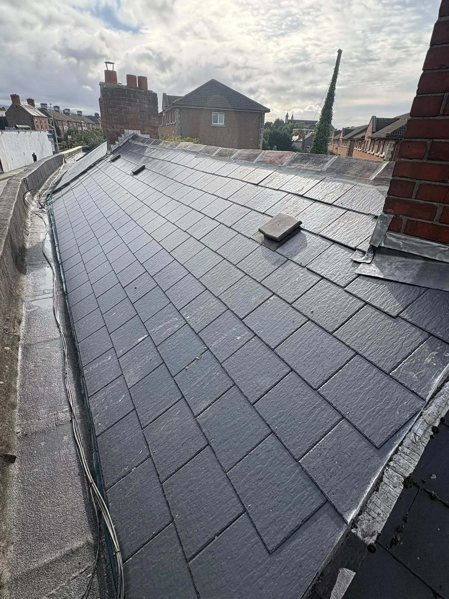

Nearly every Dublin house we visit has a flat roof somewhere: the kitchen extension, the garage, a dormer or a bay window. Most of them were covered in felt thirty years ago and most of them are now leaking. When it’s time to replace one, you’ve essentially got three choices.
Torch-on felt
Modern torch-on felt is nothing like the old pour-and-roll stuff. It’s a multi-layer bitumen system, heat-bonded to the deck, with a mineral cap sheet on top. Done properly it’s hard-wearing, repairable and good value.
- Best for: garages, larger extensions, roofs with a simple shape.
- Watch out for: poor detailing at upstands and outlets. This is where cheap felt jobs fail.
Liquid-applied roofing
A cold-applied liquid membrane that cures into a seamless, flexible skin. Because there are no joints and no flame, it’s ideal for awkward roofs with lots of pipes, roof windows and changes in level. It can often go over an existing sound felt roof, which saves stripping.
- Best for: complicated roofs, roofs with Velux windows, overcoating a tired but sound roof.
- Watch out for: it needs a clean, dry surface and the right primer. Rushed prep means a short life.
GRP fibreglass
Glass-reinforced plastic laid wet onto a new timber deck and finished with a coloured topcoat. It sets into a single hard sheet with no seams and is very tough underfoot, which makes it a good choice for balconies and roofs people walk on.
- Best for: new decks, balconies, dormers, anywhere you want a crisp finish.
- Watch out for: it needs a dry day and a new or very sound deck. It’s not a go-over-the-old-roof product.
Don’t forget the falls and the insulation
Whatever goes on top, a flat roof needs a fall so water actually leaves it, and if the room below is cold, replacing the roof is the cheapest moment you’ll ever get to add insulation. We build both into the quote.



Roof leaking? Let’s get it sorted.
Call us for an honest look and a straight price. No pushy sales, no surprises on the bill.